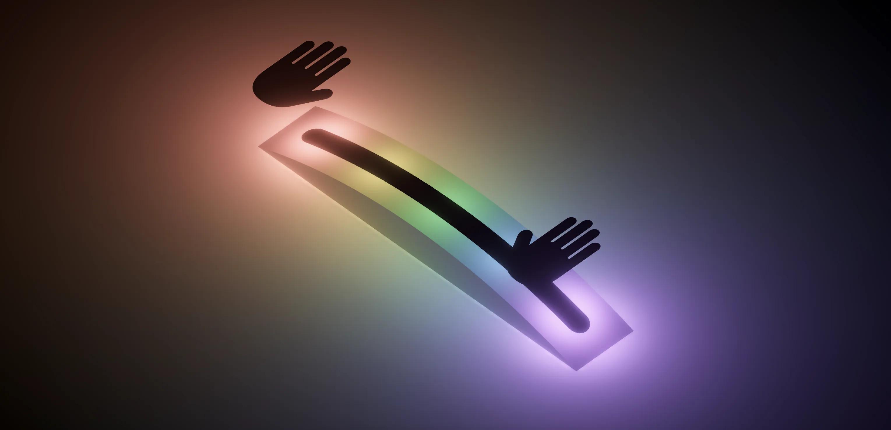
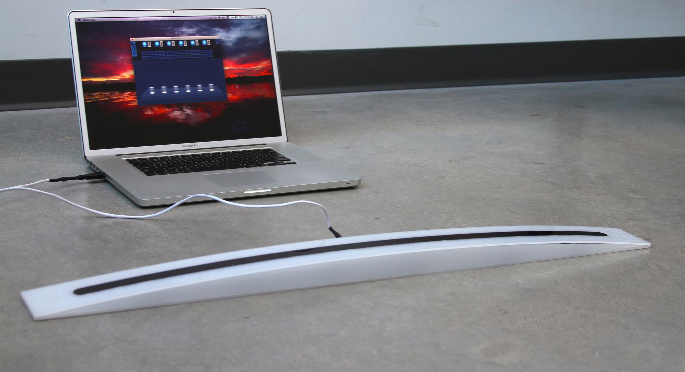

v1 of music software written in Processing, but had sound quality issues

A redesign of a project created by NuVu Studio students, the Music Box is a hands-free interactive musical instrument that lets you mix music live using any loops or samples that you want.

Hardware powered by Arduino and coded in C++
6 infrared sensors read the positions of the user's hands
24 LEDs light up in response to the music generated
v1 of music software written in Processing, but had sound quality issues
Rewrote in Max/MSP to read in raw sensor data and generate music